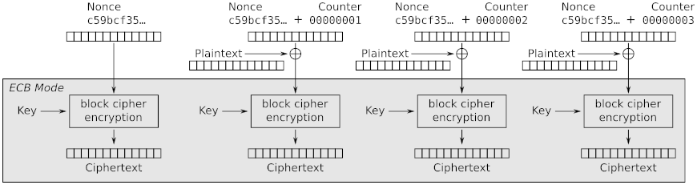
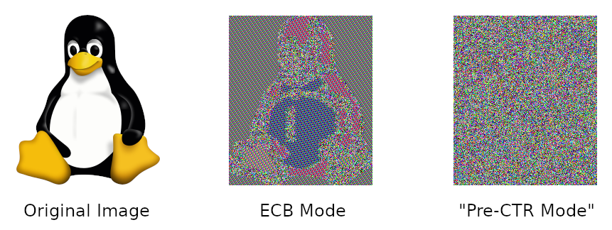

Solve “Question 4” from the Formal Models for Cryptography reading.
Joe Crypto is a little too confident in his ability to design secure cryptographic systems, and decides he will “fix” the two main problems with ECB mode: patterns across repeated plaintext blocks, and deterministic encryption. He has some super-awesome code that performs AES encryption in ECB mode, and he wants to re-use that software, so he comes up with this algorithm: He is going to XOR blocks of plaintext with a randomly-initialized counter (i.e., a “nonce”), and then feed that output through his ECB mode encryption software. He has even decided to provide additional protection by encrypting the initial counter value, resulting in what he has named “Pre-CTR mode,” with encryption shown in the following diagram (this was adapted from the diagram for CTR mode encryption on the Wikipedia page for “Block cipher modes of operation”):

Draw the corresponding decryption diagram, showing the part of the diagram that corresponds to a regular ECB-mode decryption (similar to how that’s shaded in the encryption diagram).
Joe tests his new Pre-CTR Mode encryption with the classic “Tux image” to see if it hides patterns (unlike ECB mode). Here’s the comparison:

Excellent! Problem, solved, right? Unfortunately, his newly-invented Pre-CTR mode is not even IND-CPA secure. Prove this. (Hint: Carefully think through the solution to the previous question. You can define a similar adversary in this case, which will never make any direct calls to the encryption oracle. It requires using plaintexts with two blocks as challenge ciphers, where one of them is very carefully chosen to “undo” the change that the plaintext counter XOR does.)
Consider two users on a Unix system, alice and bob. Both are members of the group develop. There is another user on the system, charlie, who is not a member of the developer group. Consider the following files in a directory that all users can access:
-r--r----- 1 alice develop 3612 Oct 25 14:36 Makefile
-rwxrwxr-x 1 alice develop 4823 Oct 27 11:04 execute
-rw-rw-r-- 1 alice alice 2145 Oct 27 11:31 notes.txt
-rw-rw-r-- 1 bob develop 1098 Oct 26 21:56 source.c
-rw------- 1 alice develop 2796 Oct 27 11:03 source.o
-rwsrwxr-x 1 alice develop 4823 Oct 27 11:12 specialFor each question below, give a very brief explanation of your answer.
Which files can alice modify?
Which files can bob modify?
Which files can charlie read?
Which files can charlie modify?
Programs named execute and special are the exact same program, but are two copies with different permissions. This program tries to open and modify the notes.txt file. If bob runs the version named execute, will the program be able to perform these operations?
If bob runs the version named special, will the program be able to perform these operations?
If execute and special perform differently for bob, why?
The “capabilities” labtainer exercise is brief and can be completed in under 30 minutes, but it demonstrates a very important security feature of modern Linux systems. Complete the labtainer exercise, with the following change: you do not need to submit the lab report it refers to under “Submission,” nor do you have to answer the questions at the end of Task 2, but you still need to submit the .lab file which documents your work. Hint for Task 1.2: You may need to refer to the man page “cap_from_text” to see how to format the capability-setting command.
You should also answer this question as part of your written problem submission: What results did you see from Task 2? In other words, which open calls failed? Answer honestly: Did you correctly predict what was going to happen? Then explain in your own words why some calls failed and others succeeded.
Complete the “file-deletion” labtainer exercise, including the lab report (which is submitted as part of the labtainer .lab file – make sure you save your report before you run the stoplab command). This labtainer explores some of the concepts regarding file deletion that we discuss in the “Physical Security” lecture.